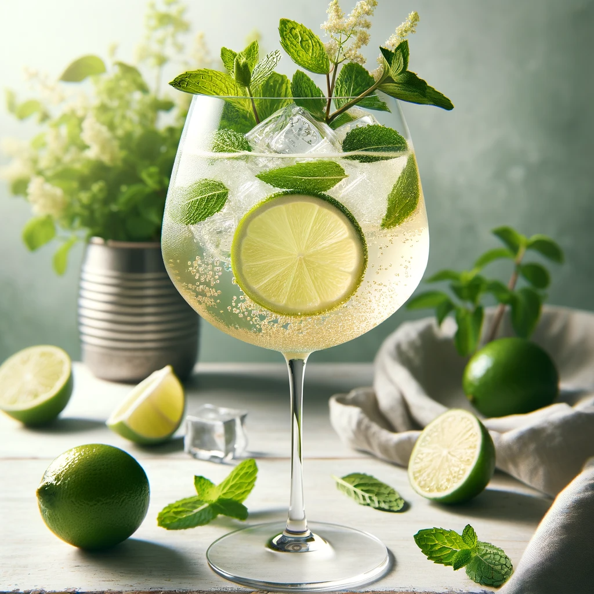
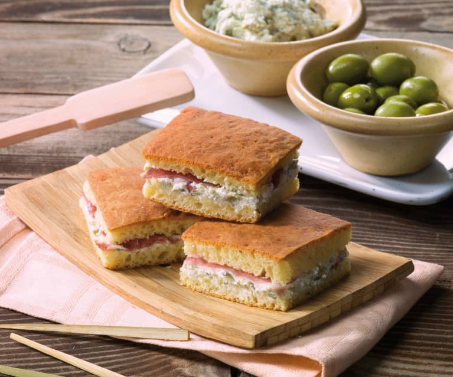
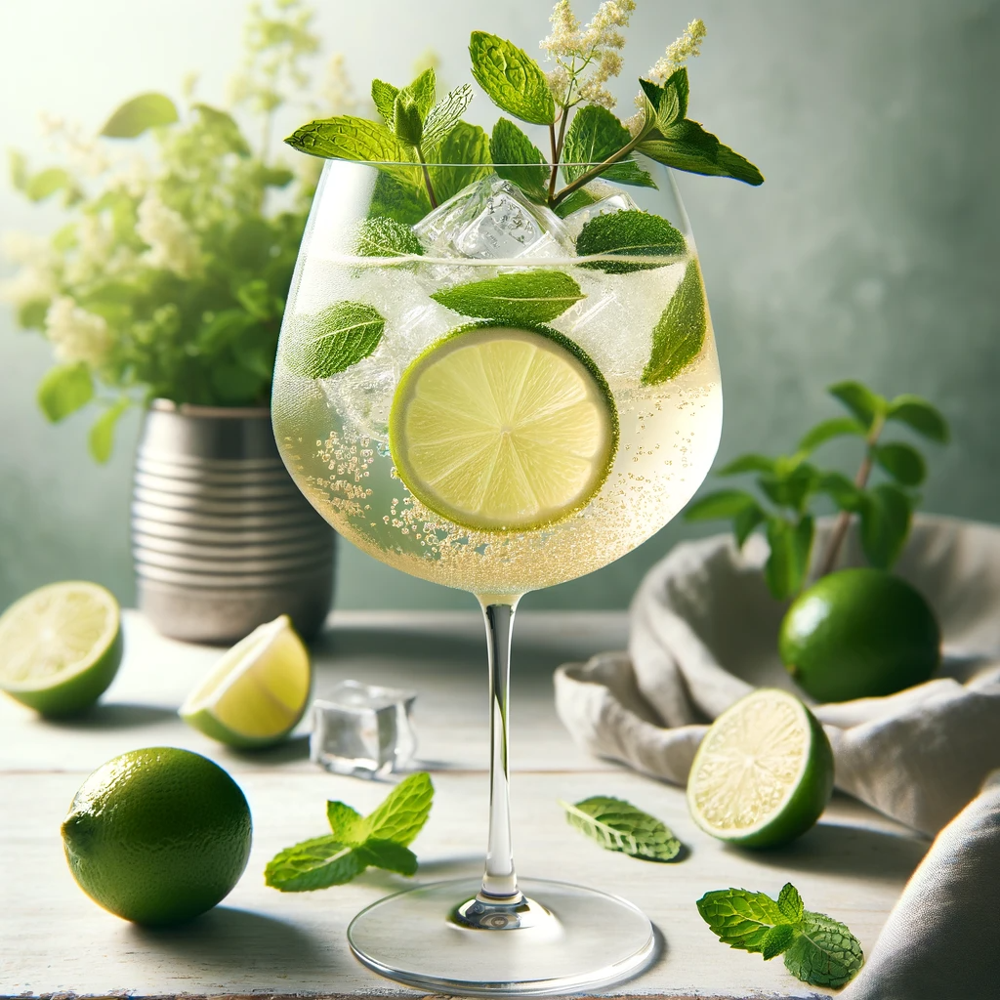
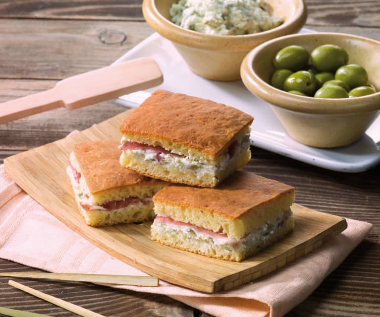

Welcome to "SD Bar"!
Discover the perfect blend of flavor and ambiance at "SD Bar". Whether you're a coffee connoisseur, a cocktail enthusiast, or simply seeking a cozy spot to unwind, we've got you covered. Our bartenders and baristas are passionate about crafting the finest drinks, and our space is designed to be your home away from home. Come in, relax, and enjoy a moment of bliss with every sip.
Our Story
At "SD Bar", drinks are more than just beverages—they're experiences. Our journey began with a love for coffee and cocktails and a desire to create a community space where everyone feels welcome. We source the highest quality ingredients from around the world and mix them to perfection, ensuring every drink is a masterpiece.
Our Menu
From classic espresso and lattes to unique cocktails and fine spirits, our menu has something for everyone. Pair your favorite drink with one of our freshly made sandwiches or light snacks, all crafted with love and the finest ingredients.
 



Join Us
We believe in more than just serving great drinks; we believe in fostering connections. Join us for our weekly events, from open mic nights to cocktail classes, and be part of our vibrant community.
Stay Connected
Follow us on social media to stay updated on our latest offerings and events. We love seeing your moments at "SD Bar", so don't forget to tag us in your photos! You will find all links in the footer of the page :)